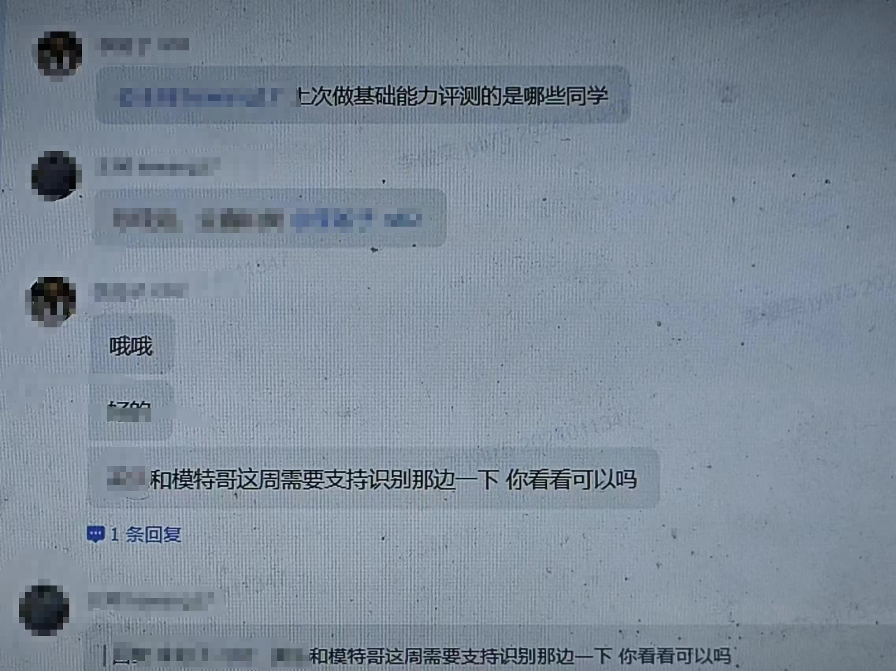
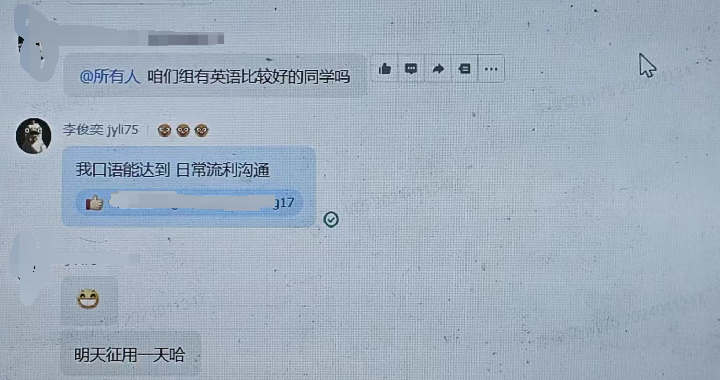
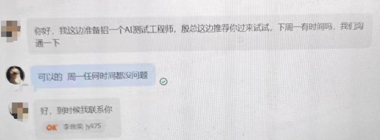

开头先简单说说我目前的状况，本人21-25就读于沈阳某所双非大学，目前在合肥的某家大厂转正成功。
首先实习机会是怎么获得的？这个说来也莫名其妙，就是一个普通的午后，我午觉睡醒，拿起手机刚好一个电话就打进来了，接起来发现是这家公司的hr，想约个时间面试下，于是第二天就面上了，后续简单沟通了下，就给我发了实习offer。
可以看到，这个机会就是莫名其妙获得的，不过这个”莫名其妙“的前提是你简历投的够多。
后续就是进了这家公司，一开始待的组是做汽车语音交互的，跟大模型相关，但我作为实习生，接触不到什么核心内容，就只能打打杂，比如编写测试用例（这是主要工作），写脚本统计数据。大概过了半个月，mentor被调走了，去到的组是做通用大模型的语音交互，这个业务是这里的老板新接下来的，组里比较缺人，我便被mentor一起带走了。
因为业务比较新，部门的大老板比较重视这件事，所以我跟部门的大老板也有了接触，这无疑给了我展示个人能力的机会，接下来的实习工作其实没什么含金量，做的事仍然比较杂乱，比如模型测评（这是主要工作）、写脚本统计数据（这其实就是洗数据）、被临时借调去同部门另一个组帮忙，那边是做语音识别的，脚本、原始音频直接给我了，我只需要在脚本里面换个参数把脚本跑起来获得结果，再把结果规整下提供给他们。
这样一套组合拳下来，我个人能力几乎没有提升，不过我的能力获得了大老板的赏识，会给我开玩笑、画饼（这个饼最后确实给我了）、内推推荐我。

 在实习期间，工作虽然没什么含金量，但我都按时、提起完成、提出个人想法，获得了leader、大老板的认可，怎么获得能力的认可我并没有刻意的去做，完全随缘，老板看到了就看到了，没看到我也无所谓，我觉得作为实习生，心眼肯定玩不过这些职场老油条，你就秉持大学生“该有的清澈、真诚”去跟他们进行工作上的沟通、合作即可，剩下的交给天意。
在实习的同时，我也寻找过其他公司的机会，毕竟只获得了口头转正的offer，内心对此保持质疑。包装了下简历，陆陆续续面了十来场，拿了一家小厂的offer（苏州万掌店 6.2k），在拿到这个小厂offer后一天，转正通过了，就没有继续面下去了。
规模大点的公司，实习生基本都是打杂的，如果能重来，我更愿意去一家新创公司实习，虽然人少事多，但作为实习生，能接触到的基础面很大，什么业务都能接触到，说不定表现好点，老板还会让你单独带人负责某个模块，这是大厂给不到的。
那万一你”十分不幸“拿到了大厂的实习offer，你如何包装呢？ 多思考 WHY，mentor、leader让你做的事，多思考思考它在项目中起什么作用，比如我做的模型测评，测评的目的和用处是什么？简单思考后就能推测出，目的是比较多家竞品模型、哪个表现更好，就抄谁的，比较自家的模型，哪个表现更好，就用哪个上市。这时候你负责模块的用处了解后，就可以思考下这道”工序“的上、下游是什么了，上游无疑是用部署好的模型根据问题跑答案，那么喂给模型的“问题”怎么来的？答案怎么跑？琢磨透了，那这部分工作就是你干的，就可以往简历上写，琢磨不透也可以问问mentor，你问了，他说了，你就赚了，你问了，人家不说，你也不亏。
最后的最后，我觉得得多主动，那时候老板找人做英文体验，如果我不回应我还能转正成功？总而言之，多主动参与，让自己成为不可替代的一部分，让他们觉得如果缺少了你，他们损失重大。当你参与的事情足够多了，你的分量就重了，你的离去都得让老板掂量掂量会不会对项目造成影响，能否按时交付出去。
如果找不到实习怎么办，或者说没时间去线下实习怎么办？那就找一些可以远程实习的岗位投递，或者参与一些开源项目（比如开源之夏、有一些开源的社群，里面有人带着做开源项目），这往简历上写也是加分项，或者找一些兼职，比如世坤量化公司发起的顾问项目，无关学历，人人都能参与，还能小赚一笔（本人大学期间跟世坤签了研究顾问的合同，两月获得了300+美元），其中的收获也可以包装下往简历上写，你就说这是一段实习经历，企业用尽各种法子压榨劳动者、避税，我包装下简历怎么了？
这篇文章大概就分享这么多，对了，如果你对研究顾问的事情感兴趣，可以注册看看，用我的推荐码还能获得200美元的新人奖励。
注册链接https://platform.worldquantbrain.com/referral/ED93297
推荐码：ED93297